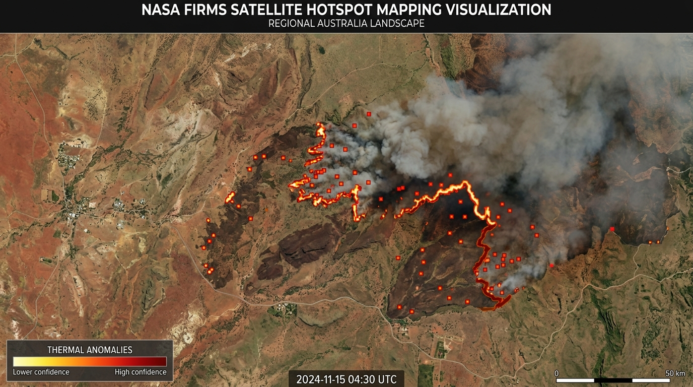
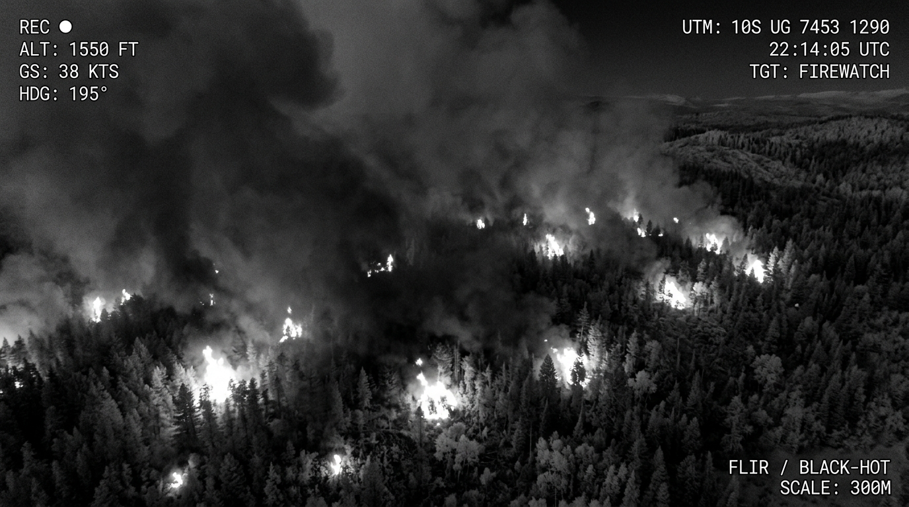

Strategic Detection & Mapping
Satellites and drones are primarily used for detection, mapping and situational awareness. Their main value is that they help fire agencies understand where a fire is, how it is moving, and where new ignition points may be forming.
analytics FIRMS System
NASA’s FIRMS system uses satellite observations from instruments such as MODIS and VIIRS to detect active fires and thermal anomalies in near real time, giving emergency managers broad-area information that would be impossible to collect from the ground alone.

The Strength of Scale
The great strength of satellites is scale. A satellite can monitor vast, remote areas, including rugged bushland, mountain country and regions with limited road access. This makes satellite hotspot mapping especially useful during large fire seasons, when agencies need a statewide or nationwide picture rather than information from only one fireground.
Thermal anomaly data usually needs to be interpreted alongside local intelligence. Detections can include hot smoke, agricultural heat, or industrial sources.

Tactical Air Support: Drones
Where satellites provide the broad view, drones provide the close, local view. Equipped with infrared or thermal imaging cameras, drones can fly low over smoky, dark or dangerous terrain to detect spot fires, heat along containment lines, and fire activity hidden beneath canopy or smoke.
- check_circle Safely gather intelligence in night conditions or high-risk terrain.
- check_circle Identify residual heat for precise "blacking-out" work.
- check_circle Minimize personnel exposure in hazardous locations.
Summary of Intelligence
Satellites and drones are not extinguishing tools in themselves. Their purpose is to make firefighting more informed. Satellites provide regional surveillance; drones provide tactical reconnaissance. Together they help commanders allocate crews, prioritise threats and respond faster to changing fire behaviour.